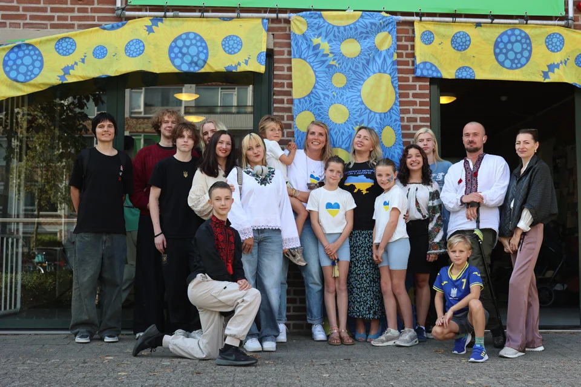

Samen maken, koken en muziek beleven.Разом творити, готувати та насолоджуватися музикою.
20252025Vital’nya

Een groepsfoto bij de ingang.Групове фото біля входу.
Samen beleefdПережили разом
Een terugblik in beelden: schilderen, koken, handwerk, muziek en ontmoetingen binnen de gemeenschap.Спогади у світлинах: малювання, приготування їжі, рукоділля, музика та зустрічі спільноти.
In beeldenУ світлинах
Klik op een foto om deze te vergroten.Натисніть на світлину, щоб збільшити.
Een groepsfoto bij de ingang.Групове фото біля входу.